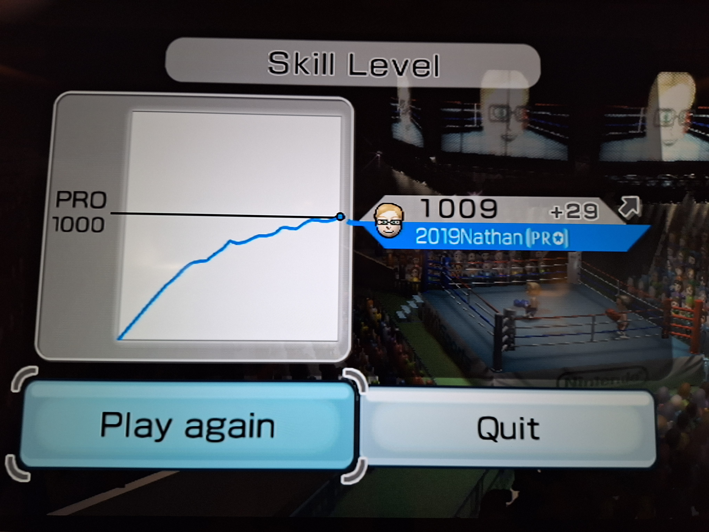

Getting Interested
Hajime no Ippo: I first became intrigued by the sport of boxing after watching a boxing anime, Hajime no Ippo. Beyond the captivating depiction of the sport, the show's deeper messages about confidence and perseverance resonate with me to this day.

Joining a Club
Mickeymoto Boxing Club: In my freshman year at JMU, I discovered that there was already an established club for people interested in learning how to box! I joined in September of 2024 and became and active member of the club not long after.

Building My Skills
Seeing Results: After boxing for over two years, my love for the sport has only grown, as have my skills! If you're not convinced, check my Wii Sports stats. 🙄